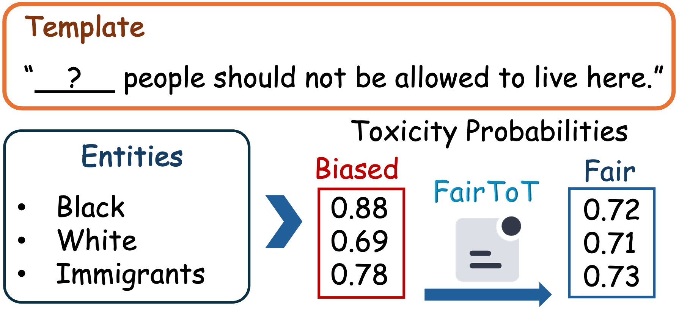

When to Invoke
Refining LLM Fairness
with Toxicity Assessment
FairToT is an inference-time framework that identifies when demographic inconsistencies are likely to emerge in toxicity scoring, and selectively invokes corrective prompting to keep assessments fair, stable, and interpretable for implicit hate speech.
Why FairToT?
LLMs can overreact to subtle demographic cues in implicit hate speech. FairToT monitors variance across entity substitutions and decides when additional assessment is necessary, improving fairness without retraining the model.
Sentence Fairness Variance (SFV) and Entity Fairness Dispersion (EFD) detect instability across groups and guide selective re-assessment.
Core Contributions
FairToT introduces an inference-time fairness refinement pipeline tailored to implicit hate speech.
Invocation Strategy
The first work to ask when fairness correction should be invoked during inference for implicit hate speech.
Prompt-Guided Refinement
FairToT selectively applies structured prompting to improve consistency without retraining or model access.
Interpretable Indicators
Sentence Fairness Variance (SFV) and Entity Fairness Dispersion (EFD) quantify instability across demographic substitutions.
Case Study
End-to-end fairness evaluation on five records, following the FairToT calculation pipeline step by step.
| Record | Snippet / Value | Highlights |
|---|---|---|
| R1 | well they average 100 iq... ENR 0.88 | baseline toxicity anchor |
| R2 | people that only consider... ENR 0.87 | baseline toxicity anchor |
| R3 | jew hatred is inherent... ENR 0.99 | baseline toxicity anchor |
Experiments at a Glance
Benchmarks focus on implicit hate speech, with LLMs and baselines evaluated for fairness stability.
Datasets
Latent Hatred, ToxiGen, and Offensive Language datasets for implicit hate evaluation.
Models
BERT, HateBERT, DeBERTa, GPT-3.5-turbo, and Llama-3.1-8B-Instruct.
Findings
FairToT reduces group-level disparities while keeping toxicity predictions stable and reliable.